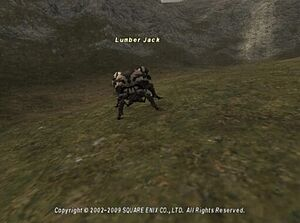

Level 75 reference · Zenith rules
|
Job: Dark Knight, Red Mage, Black Mage Notorious Monster |
 |

| Zone | Level | Drops | Steal | Spawns | Notes |
|---|---|---|---|---|---|
| Batallia Downs | 55 | 1 | A, S, Sc | ||
|
HP = Detects Low HP; M = Detects Magic; Sc = Follows by Scent; T(S) = True-sight; T(H) = True-hearing JA = Detects job abilities; WS = Detects weaponskills; Z(D) = Asleep in Daytime; Z(N) = Asleep at Nighttime | |||||
Notes
- Spawns after the Weeping Willow is defeated. Will despawn if left unclaimed.
- Weeping Willow spawns every 21-24 hours.
- Has around 25,000 HP.
- Has Double Attack.
- Is able to use Blood Weapon in addition to normal Beetle special attacks.
- Casts Enstone, Stonega IV, Break. These spells have a nearly instant cast time.
- Stonega IV may deal as much as 600-700 damage when unresisted.
- Has an additional effect of Stun on attacks, but this does not trigger on every attack.
- Attacks faster than normal beetles.
- Immune to Sleep.
- Susceptible to Bind and Gravity, although Bind wears off very rapidly.
- Can be defeated by: 6 characters at level 60, some combinations of 2 level 75 characters, solo by some jobs at level 75 and Summoner at level 70.
- Drops around 20,000 gil. Up to 32,265 with gilfinder.
- The number of times he can be mugged seems to vary per pop. Can mug 1100-7500 gil total.
Adapted from Eden Wiki: Lumber Jack · Contributors and history · CC BY-SA 4.0. Revision 1639. Layout, links and optional background text adapted for Zenith.